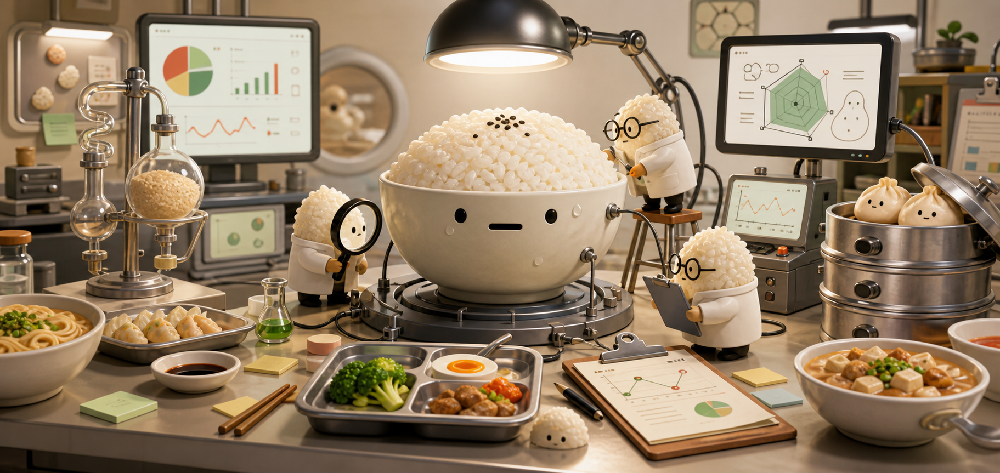

FanTong Behavior Identification
【FBI 饭桶行为识别报告】
生成自：饭桶研究所

饭桶研究所 · 中国饭点样本组
从早八豆浆到下班外卖，从满减纠结到夜宵复活。FBI = FanTong Behavior Identification。
拒绝无效。饭点行为已经暴露。
FBI 饭桶行为识别系统
当前系统只采集饭点行为，不采集真实身份；早八、拼单、满减和夜宵行为会被重点观察。
FanTong Behavior Identification
生成自：饭桶研究所
饭桶研究所档案库
研究所避嫌说明
FBI 在这里仅指 FanTong Behavior Identification，是饭桶研究所的虚构研究系统。 不使用真实机构品牌、徽章、印章或执法符号。